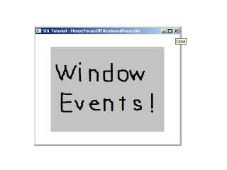

Window Events

Last Updated 4/28/14
SDL also supports resizable windows. When you have resizable windows there are additional events to handle, which is what we'll be doing here.class LWindow
{
public:
//Intializes internals
LWindow();
//Creates window
bool init();
//Creates renderer from internal window
SDL_Renderer* createRenderer();
//Handles window events
void handleEvent( SDL_Event& e );
//Deallocates internals
void free();
//Window dimensions
int getWidth();
int getHeight();
//Window focii
bool hasMouseFocus();
bool hasKeyboardFocus();
bool isMinimized();
private:
//Window data
SDL_Window* mWindow;
//Window dimensions
int mWidth;
int mHeight;
//Window focus
bool mMouseFocus;
bool mKeyboardFocus;
bool mFullScreen;
bool mMinimized;
};
Here is our window class we'll be using as a wrapper for the SDL_Window.
It has a constructor, a initializer that creates the window, a function
to create renderer from the window,
an event handler, a deallocator, and some accessor functions to get
various attributes from the window.
In terms of data members, we have the window we're wrapping, the dimensions of the window, and flags for the types of focus the windows has. We'll go into more detail further in the program.
In terms of data members, we have the window we're wrapping, the dimensions of the window, and flags for the types of focus the windows has. We'll go into more detail further in the program.
//Our custom window
LWindow gWindow;
//The window renderer
SDL_Renderer* gRenderer = NULL;
//Scene textures
LTexture gSceneTexture;
We'll be using our window as a global object.
LWindow::LWindow()
{
//Initialize non-existant window
mWindow = NULL;
mMouseFocus = false;
mKeyboardFocus = false;
mFullScreen = false;
mMinimized = false;
mWidth = 0;
mHeight = 0;
}
In the constructor we initialize all our variables.
bool LWindow::init()
{
//Create window
mWindow = SDL_CreateWindow( "SDL Tutorial", SDL_WINDOWPOS_UNDEFINED, SDL_WINDOWPOS_UNDEFINED, SCREEN_WIDTH, SCREEN_HEIGHT, SDL_WINDOW_SHOWN | SDL_WINDOW_RESIZABLE );
if( mWindow != NULL )
{
mMouseFocus = true;
mKeyboardFocus = true;
mWidth = SCREEN_WIDTH;
mHeight = SCREEN_HEIGHT;
}
return mWindow != NULL;
}
Our initialization function creates the window with the SDL_WINDOW_RESIZABLE
flag which allows for our window
to be resizable. If the function succeeds we set the corresponding flags
and dimensions. Then we return whether the window is null or not.
SDL_Renderer* LWindow::createRenderer()
{
return SDL_CreateRenderer( mWindow, -1, SDL_RENDERER_ACCELERATED | SDL_RENDERER_PRESENTVSYNC );
}
Here we're handling the creation of a renderer from the member window.
We're returning the created renderer because rendering will be handled
outside of the class.
void LWindow::handleEvent( SDL_Event& e )
{
//Window event occured
if( e.type == SDL_WINDOWEVENT )
{
//Caption update flag
bool updateCaption = false;
In our window's event handler we'll be looking for events of type SDL_WINDOWEVENT.
SDL_WindowEvents are actually
a family of events. Depending on the event we may have to update the
caption of the window, so we have a flag that keeps track of that.
switch( e.window.event )
{
//Get new dimensions and repaint on window size change
case SDL_WINDOWEVENT_SIZE_CHANGED:
mWidth = e.window.data1;
mHeight = e.window.data2;
SDL_RenderPresent( gRenderer );
break;
//Repaint on exposure
case SDL_WINDOWEVENT_EXPOSED:
SDL_RenderPresent( gRenderer );
break;
When we have a window event we then want to check the SDL_WindowEventID to see what type of event it is.
An SDL_WINDOWEVENT_SIZE_CHANGED is a resize event, so we get the new dimensions and refresh the image on the screen.
An SDL_WINDOWEVENT_EXPOSED just means that window was obscured in some way and now is not obscured so we want to repaint the window.
An SDL_WINDOWEVENT_EXPOSED just means that window was obscured in some way and now is not obscured so we want to repaint the window.
//Mouse entered window
case SDL_WINDOWEVENT_ENTER:
mMouseFocus = true;
updateCaption = true;
break;
//Mouse left window
case SDL_WINDOWEVENT_LEAVE:
mMouseFocus = false;
updateCaption = true;
break;
//Window has keyboard focus
case SDL_WINDOWEVENT_FOCUS_GAINED:
mKeyboardFocus = true;
updateCaption = true;
break;
//Window lost keyboard focus
case SDL_WINDOWEVENT_FOCUS_LOST:
mKeyboardFocus = false;
updateCaption = true;
break;
SDL_WINDOWEVENT_ENTER/SDL_WINDOWEVENT_LEAVE handles when the mouse moves
into and out of the window.
SDL_WINDOWEVENT_FOCUS_GAINED/SDL_WINDOWEVENT_FOCUS_LOST have to do when
the
window is getting input from the keyboard. Since our caption keeps track
of mouse/keyboard focus, we set the update caption flag when any of
these events happen.
//Window minimized
case SDL_WINDOWEVENT_MINIMIZED:
mMinimized = true;
break;
//Window maxized
case SDL_WINDOWEVENT_MAXIMIZED:
mMinimized = false;
break;
//Window restored
case SDL_WINDOWEVENT_RESTORED:
mMinimized = false;
break;
}
Finally here we handle when the window was minimized, maximized, or restored from being minimized.
//Update window caption with new data
if( updateCaption )
{
std::stringstream caption;
caption << "SDL Tutorial - MouseFocus:" << ( ( mMouseFocus ) ? "On" : "Off" ) << " KeyboardFocus:" << ( ( mKeyboardFocus ) ? "On" : "Off" );
SDL_SetWindowTitle( mWindow, caption.str().c_str() );
}
}
If the caption needs to be updated, we load a string stream with the updated data and update the caption with
SDL_SetWindowTitle.
//Enter exit full screen on return key
else if( e.type == SDL_KEYDOWN && e.key.keysym.sym == SDLK_RETURN )
{
if( mFullScreen )
{
SDL_SetWindowFullscreen( mWindow, SDL_FALSE );
mFullScreen = false;
}
else
{
SDL_SetWindowFullscreen( mWindow, SDL_TRUE );
mFullScreen = true;
mMinimized = false;
}
}
}
For this demo we'll be toggling fullscreen with the return key. We can set fullscreen mode using
SDL_SetWindowFullscreen.
int LWindow::getWidth()
{
return mWidth;
}
int LWindow::getHeight()
{
return mHeight;
}
bool LWindow::hasMouseFocus()
{
return mMouseFocus;
}
bool LWindow::hasKeyboardFocus()
{
return mKeyboardFocus;
}
bool LWindow::isMinimized()
{
return mMinimized;
}
Here is a quick rundown of the accessors we use.
//Create window
if( !gWindow.init() )
{
printf( "Window could not be created! SDL Error: %s\n", SDL_GetError() );
success = false;
}
else
{
//Create renderer for window
gRenderer = gWindow.createRenderer();
if( gRenderer == NULL )
{
printf( "Renderer could not be created! SDL Error: %s\n", SDL_GetError() );
success = false;
}
In our initialization function we create our window and renderer only this time with our window wrapper.
void close()
{
//Free loaded images
gSceneTexture.free();
//Destroy window
SDL_DestroyRenderer( gRenderer );
gWindow.free();
//Quit SDL subsystems
IMG_Quit();
SDL_Quit();
}
In our clean up function we still deallocate our window and renderer.
//While application is running
while( !quit )
{
//Handle events on queue
while( SDL_PollEvent( &e ) != 0 )
{
//User requests quit
if( e.type == SDL_QUIT )
{
quit = true;
}
//Handle window events
gWindow.handleEvent( e );
}
//Only draw when not minimized
if( !gWindow.isMinimized() )
{
//Clear screen
SDL_SetRenderDrawColor( gRenderer, 0xFF, 0xFF, 0xFF, 0xFF );
SDL_RenderClear( gRenderer );
//Render text textures
gSceneTexture.render( ( gWindow.getWidth() - gSceneTexture.getWidth() ) / 2, ( gWindow.getHeight() - gSceneTexture.getHeight() ) / 2 );
//Update screen
SDL_RenderPresent( gRenderer );
}
}
In the main loop we make sure to pass events to the window wrapper to
handle resize events and in the rendering part of our code we make sure
to only render when the window is not
minimized because this can cause some bugs when we try to render to a
minimized window.